← iOS & Android WebView / Angular support analysis · iOS run · iOS vs Android comparison
On-device scan of every rule page · Xiaomi 22021211RI, Android 14, WebView 152.0.7977.64 · BS talkback 1.1.39 (versionCode 44) as the accessibility service ·
on-device rule engine 2.0.5 · same APK as the iOS run (Angular 22.2 + Ionic 9.0.5 + Capacitor 8.5.2) · reported framework: native
isImportantForAccessibility=falseAccessibilityNodeInfo nodes (Button, TextView, EditText, CheckBox, Switch… with names, headings, input types and URLs), and talkback serializes them.
The rule engine then discards most of them: Chromium never marks virtual nodes importantForAccessibility, and 25 of 41 rules gate on that flag
(isAccessible / shouldFocusView / speakableTextApplicable). Rules without the gate (touch-target, two-dimensional-scroll, the heading AI candidates, contrast) do reach web nodes,
but contrast is capped at PASS / needs-review and truncation can never FAIL for web text (no font-size unit from Chromium). AI rules produce ai_review candidates whose verdict needs TCG, which was not run locally.A11yAngularPOC-1.0.0.apk. Enabled com.android.talkback/…TalkBackService (BSTalkback) via settings put secure enabled_accessibility_services, restored afterwards.adb forward tcp:9333 localabstract:webview_devtools_remote_<pid> (the app sets webContentsDebuggingEnabled). A CDP client navigates to /rule/<id> and scrolls ion-content in 85% steps.
At each step it records the test-case stage rectangles in screen pixels (CSS px × devicePixelRatio + WebView top offset).am broadcast -a triggerAccessibilityScan --es sessionId local --es reportId r<ts> --es bsUserId dev --ez on_device_rules true. Wait for the
TalkBackService: Accessibility scan completed log line, then run-as com.android.talkback cat …/accessibility_data/window.json → snapshot (screenshot stripped) + screenshot.png.fail on an element inside it (needs_review / ai_review are shown separately).label-at-front · 4 test cases · 1 scan(s) · web nodes captured 46 (35 with a name, 46 importantForAccessibility=false)
Rows for this rule (status · node class · where):
none
What the rule needs: Label vs visible text.
Why web content is / isn't evaluated: BSAdditionalRules.kt:2072 skips every node with isImportantForAccessibility=false: Chromium never sets it on WebView virtual nodes (BSRules.kt:604-607; BSViewAdapter.kt:100 → BSShouldFocusView.kt:27-38).
| TC | Expect | Scenario | Android result | |
|---|---|---|---|---|
| TC1 | FAIL | Visible “Buy now”; name “Tap to Buy now”. | not detected | |
| TC2 | FAIL | Visible “Settings”; name “Open the Settings”. | not detected | |
| TC3 | PASS | Visible “Buy now”; name “Buy now, 2 items”. | — | |
| TC4 | PASS | No override; the name is the visible text. | — |
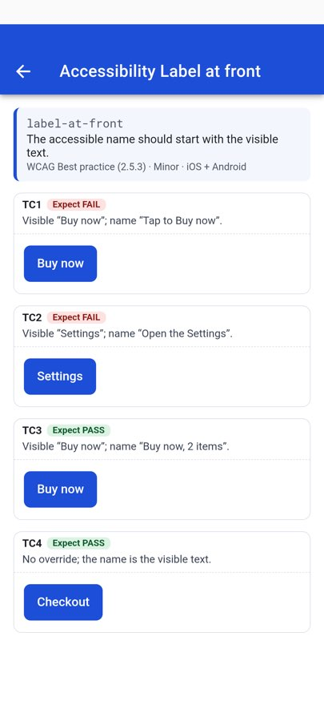
accessible-input-field-label · 6 test cases · 2 scan(s) · web nodes captured 142 (80 with a name, 121 importantForAccessibility=false)
Rows for this rule (status · node class · where):
none
What the rule needs: Label / OCR / labeledBy of EditText.
Why web content is / isn't evaluated: Gate at BSAdditionalRules.kt:1477 skips every node with isImportantForAccessibility=false: Chromium never sets it on WebView virtual nodes (BSRules.kt:604-607; BSViewAdapter.kt:100 → BSShouldFocusView.kt:27-38).
| TC | Expect | Scenario | Android result | |
|---|---|---|---|---|
| TC1 | FAIL | Placeholder “Email” is the only label. | not detected | |
| TC2 | FAIL | Ionic | ion-input with placeholder only. | not detected |
| TC3 | FAIL | Named via aria-label only; nothing is visible. | not detected | |
| TC4 | EDGE | Visible label placed far from its field. | — | |
| TC5 | PASS | Visible <label for> “Email”. | — | |
| TC6 | PASS | Ionic | ion-input with a stacked label “Full name”. | — |
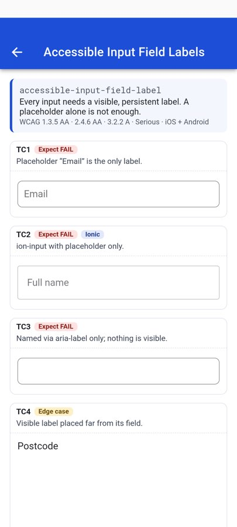
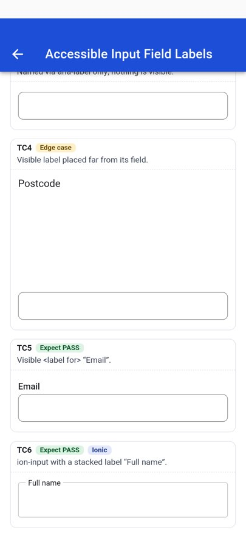
interactive-element-accessibility · 4 test cases · 1 scan(s) · web nodes captured 43 (32 with a name, 43 importantForAccessibility=false)
Rows for this rule (status · node class · where):
none
What the rule needs: —
Why web content is / isn't evaluated: Disabled placeholder on all platforms (BSAdditionalRules.kt:1054-1061).
| TC | Expect | Scenario | Android result | |
|---|---|---|---|---|
| TC1 | FAIL | Clickable span marked aria-hidden. | not detected | |
| TC2 | FAIL | Canvas-drawn button (the only content is pixels). | not detected | |
| TC3 | FAIL | Link inside an inert region. | not detected | |
| TC4 | PASS | Native button exposed to assistive tech. | — |
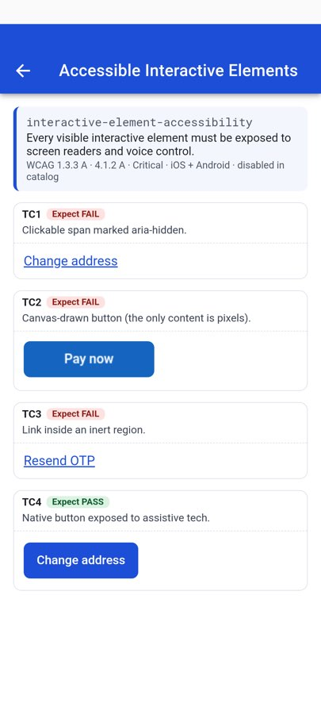
app-orientation-support · 2 test cases · 1 scan(s) · web nodes captured 32 (25 with a name, 32 importantForAccessibility=false)
Rows for this rule (status · node class · where):
1× pass on FrameLayout · outside TCs
What the rule needs: Manifest orientations (app-level).
Why web content is / isn't evaluated: Not web-dependent: manifest declares unspecified (all) → PASS.
| TC | Expect | Scenario | Android result | |
|---|---|---|---|---|
| TC1 | PASS | Build declares all orientations (Info.plist / manifest): the default state of this app. | — | |
| TC2 | EDGE | Runtime lock to portrait (not visible in Info.plist); tap, then rotate. | — |
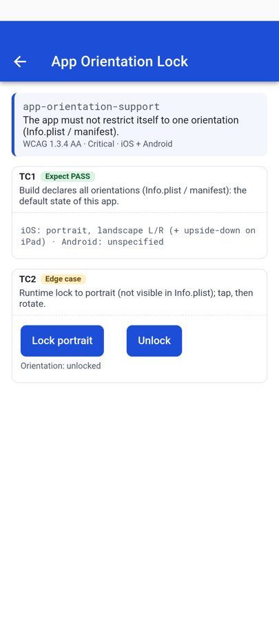
button-element-content-label-capitalization · 6 test cases · 2 scan(s) · web nodes captured 124 (89 with a name, 115 importantForAccessibility=false)
Rows for this rule (status · node class · where):
none
What the rule needs: Button-role nodes with speakable label.
Why web content is / isn't evaluated: BSAdditionalRules.kt:478 skips every node with isImportantForAccessibility=false: Chromium never sets it on WebView virtual nodes (BSRules.kt:604-607; BSViewAdapter.kt:100 → BSShouldFocusView.kt:27-38).
| TC | Expect | Scenario | Android result | |
|---|---|---|---|---|
| TC1 | FAIL | Button text starts lowercase: “submit order”. | not detected | |
| TC2 | FAIL | Visible “Continue” but aria-label is lowercase “continue”. | not detected | |
| TC3 | FAIL | Ionic | ion-button text “cancel”: shown uppercase (md mode CSS) but the name stays lowercase. | not detected |
| TC4 | EDGE | Name “Save” but CSS text-transform: lowercase renders “save” (name vs OCR). | — | |
| TC5 | EDGE | Brand that is lowercase by design: “iPhone settings”. | — | |
| TC6 | PASS | Capitalised label “Submit order”. | — |
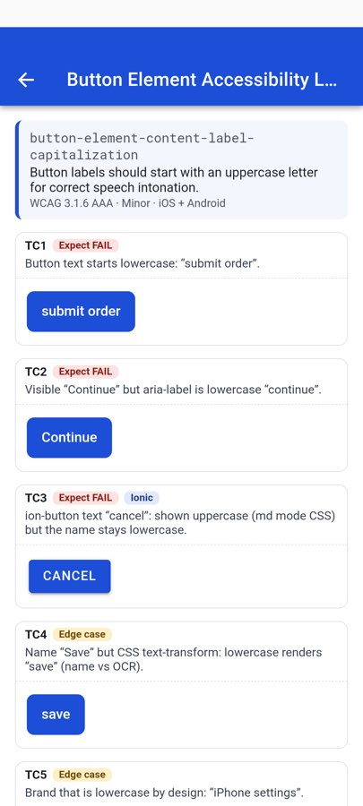
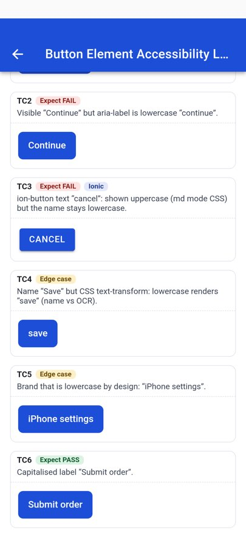
checkbox-element-content-label · 6 test cases · 2 scan(s) · web nodes captured 126 (90 with a name, 126 importantForAccessibility=false)
Rows for this rule (status · node class · where):
none
What the rule needs: CheckBox-role nodes (Chromium maps checkbox → android.widget.CheckBox).
Why web content is / isn't evaluated: BSAdditionalRules.kt:253 skips every node with isImportantForAccessibility=false: Chromium never sets it on WebView virtual nodes (BSRules.kt:604-607; BSViewAdapter.kt:100 → BSShouldFocusView.kt:27-38).
| TC | Expect | Scenario | Android result | |
|---|---|---|---|---|
| TC1 | FAIL | Native checkbox with no label at all. | not detected | |
| TC2 | FAIL | Text sits next to the checkbox but is not associated with it. | not detected | |
| TC3 | FAIL | Ionic | ion-checkbox without label text or aria-label. | not detected |
| TC4 | FAIL | Custom div role=checkbox with state but no name. | not detected | |
| TC5 | PASS | Checkbox wrapped in a label: “Accept terms”. | — | |
| TC6 | PASS | Ionic | ion-checkbox with slotted label “Subscribe”. | — |
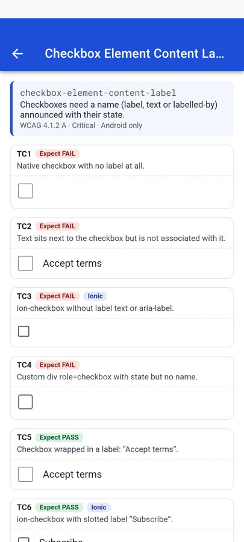
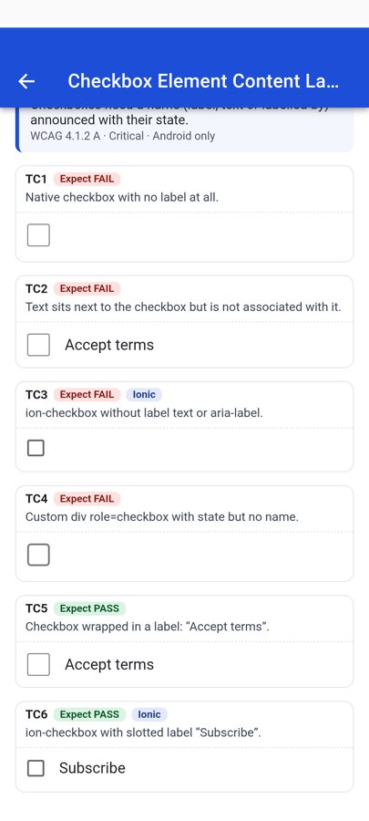
duplicate-element-content-label · 4 test cases · 2 scan(s) · web nodes captured 122 (99 with a name, 117 importantForAccessibility=false)
Rows for this rule (status · node class · where):
none
What the rule needs: Speakable labels across focusable nodes.
Why web content is / isn't evaluated: BSAdditionalRules.kt:122 skips every node with isImportantForAccessibility=false: Chromium never sets it on WebView virtual nodes (BSRules.kt:604-607; BSViewAdapter.kt:100 → BSShouldFocusView.kt:27-38).
| TC | Expect | Scenario | Android result | |
|---|---|---|---|---|
| TC1 | FAIL | Three rows, three different targets, all named “Edit”. | not detected | |
| TC2 | FAIL | Ionic | Two icon ion-buttons both aria-label “Delete” for different items. | not detected |
| TC3 | EDGE | Same name, same destination (“Home” twice) is acceptable. | — | |
| TC4 | PASS | Unique names: “Edit address”, “Edit phone”, “Edit email”. | — |
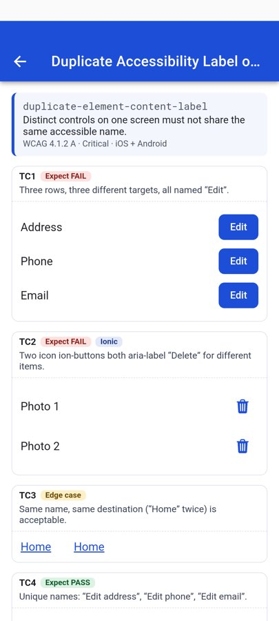
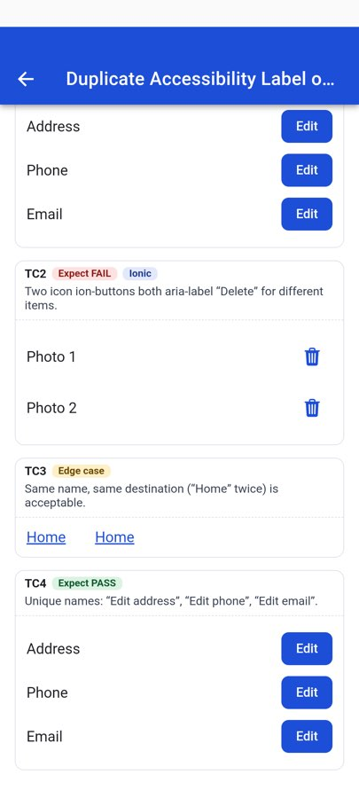
state-in-content-label · 5 test cases · 1 scan(s) · web nodes captured 55 (44 with a name, 55 importantForAccessibility=false)
Rows for this rule (status · node class · where):
none
What the rule needs: Label + state.
Why web content is / isn't evaluated: BSAdditionalRules.kt:431 skips every node with isImportantForAccessibility=false: Chromium never sets it on WebView virtual nodes (BSRules.kt:604-607; BSViewAdapter.kt:100 → BSShouldFocusView.kt:27-38).
| TC | Expect | Scenario | Android result | |
|---|---|---|---|---|
| TC1 | FAIL | Checkbox aria-label “Notifications checked”, and it is checked. | not detected | |
| TC2 | FAIL | Toggle button aria-pressed=true named “Wi-Fi on”. | not detected | |
| TC3 | FAIL | Selected tab named “Home selected”. | not detected | |
| TC4 | FAIL | Ionic | ion-toggle labelled “Dark mode enabled”. | not detected |
| TC5 | PASS | Checkbox named “Notifications”; the checked state comes from the control. | — |
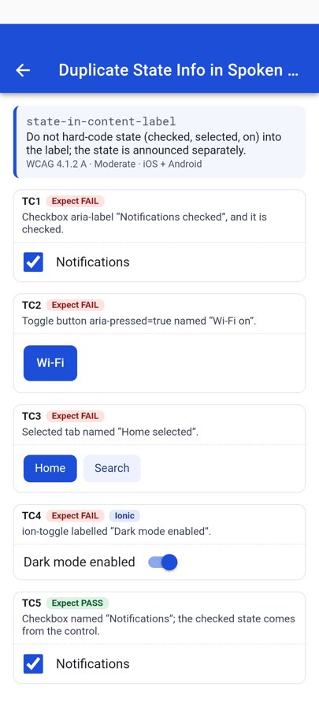
view-type-in-content-label · 6 test cases · 2 scan(s) · web nodes captured 124 (99 with a name, 121 importantForAccessibility=false)
Rows for this rule (status · node class · where):
none
What the rule needs: Label words vs role.
Why web content is / isn't evaluated: BSAdditionalRules.kt:608 skips every node with isImportantForAccessibility=false: Chromium never sets it on WebView virtual nodes (BSRules.kt:604-607; BSViewAdapter.kt:100 → BSShouldFocusView.kt:27-38).
| TC | Expect | Scenario | Android result | |
|---|---|---|---|---|
| TC1 | FAIL | Button labelled “Save button”. | not detected | |
| TC2 | FAIL | Link labelled “Privacy policy link”. | not detected | |
| TC3 | FAIL | Checkbox labelled “Remember me checkbox”. | not detected | |
| TC4 | FAIL | Ionic | ion-toggle labelled “Dark mode switch”. | not detected |
| TC5 | FAIL | Image aria-label “Profile image”. | not detected | |
| TC6 | PASS | Plain names: “Save”, “Privacy policy”. | — |
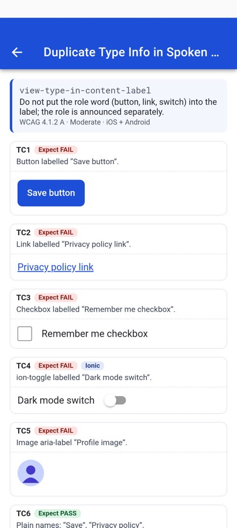
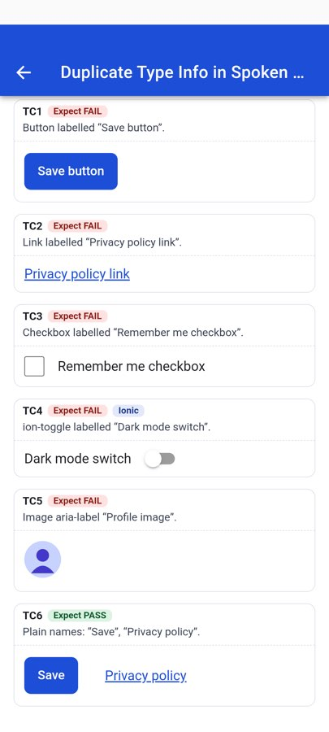
editable-element-content-label · 6 test cases · 2 scan(s) · web nodes captured 128 (86 with a name, 119 importantForAccessibility=false)
Rows for this rule (status · node class · where):
none
What the rule needs: Speakable label of editable nodes.
Why web content is / isn't evaluated: BSAIRules.kt:315 skips every node with isImportantForAccessibility=false: Chromium never sets it on WebView virtual nodes (BSRules.kt:604-607; BSViewAdapter.kt:100 → BSShouldFocusView.kt:27-38).
| TC | Expect | Scenario | Android result | |
|---|---|---|---|---|
| TC1 | FAIL | Text field with a value but no name. | not detected | |
| TC2 | FAIL | Unnamed textarea. | not detected | |
| TC3 | FAIL | contenteditable div with no name. | not detected | |
| TC4 | FAIL | Ionic | ion-textarea with no label. | not detected |
| TC5 | PASS | Labelled field with a value: name “First name”, value “John”. | — | |
| TC6 | PASS | Textarea named by aria-labelledby. | — |
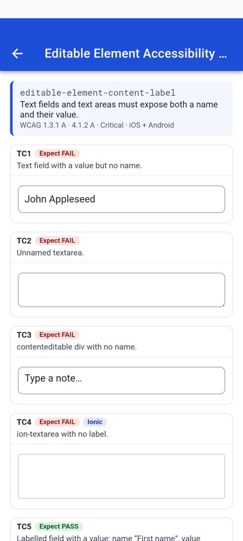
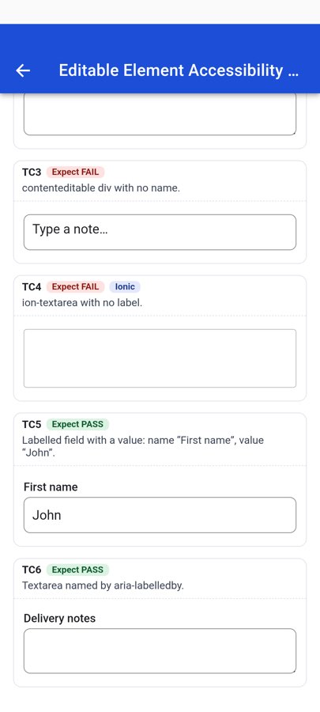
editable-element-no-content-description · 4 test cases · 1 scan(s) · web nodes captured 43 (33 with a name, 43 importantForAccessibility=false)
Rows for this rule (status · node class · where):
none
What the rule needs: desc / hint / value / labeledBy on EditText.
Why web content is / isn't evaluated: Evaluates web fields when the label is "lost" (BSAdditionalRules.kt:372-386); Chromium never sets labeledBy, so filled web fields with hint/desc are FP-prone.
| TC | Expect | Scenario | Android result | |
|---|---|---|---|---|
| TC1 | FAIL | Field named only by aria-label (becomes contentDescription on Android). | not detected | |
| TC2 | FAIL | aria-label overrides a visible hint: “Search”. | not detected | |
| TC3 | EDGE | title attribute used as the only name. | — | |
| TC4 | PASS | Visible label linked with for/id (labelFor on Android). | — |
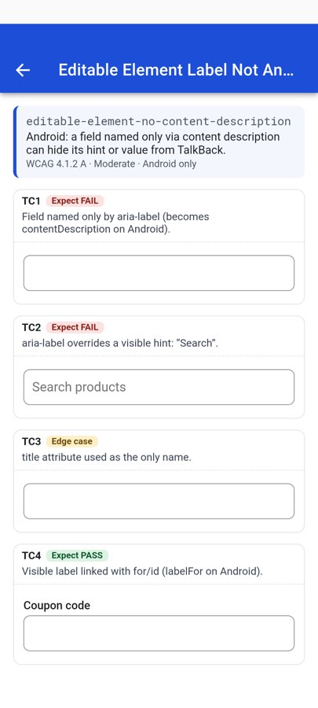
text-magnification · 5 test cases · 2 scan(s) · web nodes captured 106 (90 with a name, 106 importantForAccessibility=false)
Rows for this rule (status · node class · where):
none
What the rule needs: fontSizeUnit / textSizeInPx.
Why web content is / isn't evaluated: BSRules.kt:927 skips every node with isImportantForAccessibility=false: Chromium never sets it on WebView virtual nodes (BSRules.kt:604-607; BSViewAdapter.kt:100 → BSShouldFocusView.kt:27-38); unit null for web text.
| TC | Expect | Scenario | Android result | |
|---|---|---|---|---|
| TC1 | FAIL | Fixed 15px text with -webkit-text-size-adjust:none (never scales). | not detected | |
| TC2 | FAIL | Text sized in vw units (tracks screen width, not text size). | not detected | |
| TC3 | FAIL | Text in a fixed-height box that clips when enlarged. | not detected | |
| TC4 | PASS | iOS Dynamic Type via font: -apple-system-body; rem sizing elsewhere. | — | |
| TC5 | EDGE | Ionic default text (Ionic's own dynamic-font support). | — |
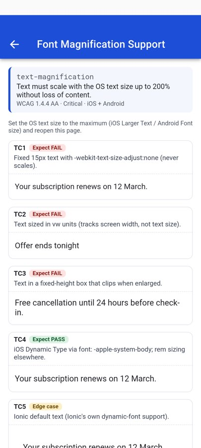
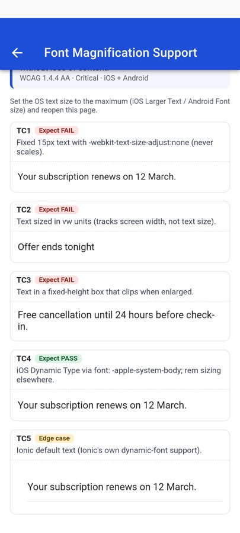
images-of-text · 6 test cases · 2 scan(s) · web nodes captured 118 (88 with a name, 102 importantForAccessibility=false)
Rows for this rule (status · node class · where):
none
What the rule needs: Image-role nodes + OCR.
Why web content is / isn't evaluated: No importance gate (BSAIRules.kt:403), but a non-clickable <img> is android.widget.Image → ROLE_NONE, so only clickable images qualify.
| TC | Expect | Scenario | Android result | |
|---|---|---|---|---|
| TC1 | FAIL | Promo banner image containing “50% OFF SUMMER SALE”. | not detected | |
| TC2 | FAIL | CSS background-image that contains text (“FREE DELIVERY”). | not detected | |
| TC3 | FAIL | Instructions rendered as an image. | not detected | |
| TC4 | EDGE | Logotype: brand text in a logo (exempt under WCAG 1.4.5). | — | |
| TC5 | PASS | The same banner built from real text + CSS. | — | |
| TC6 | PASS | Photo without text. | — |
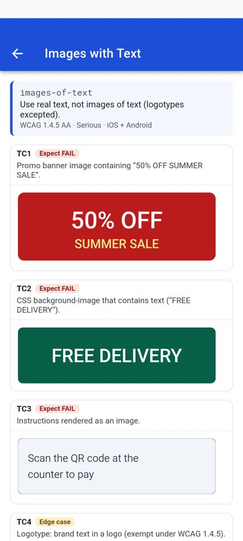
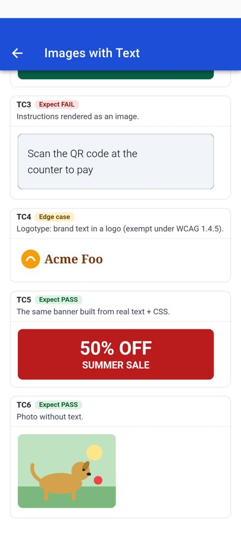
incorrect-heading · 5 test cases · 2 scan(s) · web nodes captured 100 (85 with a name, 99 importantForAccessibility=false)
Rows for this rule (status · node class · where):
38× ai_review on TextView · outside TCs
4× ai_review on TextView · TC3
2× ai_review on TextView · TC1
2× ai_review on TextView · TC2
2× ai_review on TextView · TC4
2× ai_review on TextView · TC5
What the rule needs: TextView leaves with isHeading (Chromium setHeading).
Why web content is / isn't evaluated: No importance gate (BSAIRules.kt:489-500): web headings become AI candidates (ai_review); the verdict needs TCG, not run locally.
| TC | Expect | Scenario | Android result | |
|---|---|---|---|---|
| TC1 | FAIL | Call to action marked as a heading: <h2>Tap to continue</h2>. | AI candidate | |
| TC2 | FAIL | Whole sentence marked as a heading. | AI candidate | |
| TC3 | FAIL | Vague heading text that describes nothing: “Section”. | AI candidate | |
| TC4 | FAIL | Price value marked as role=heading. | AI candidate | |
| TC5 | PASS | Heading “Saved payment methods” titles the content below it. | AI candidate |
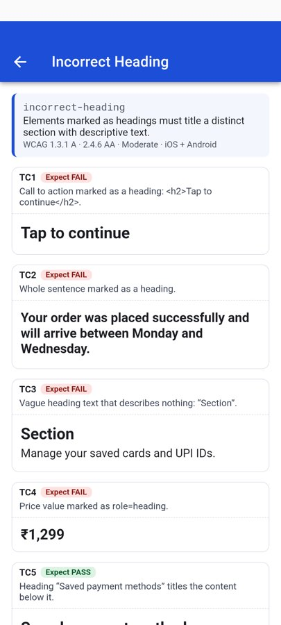
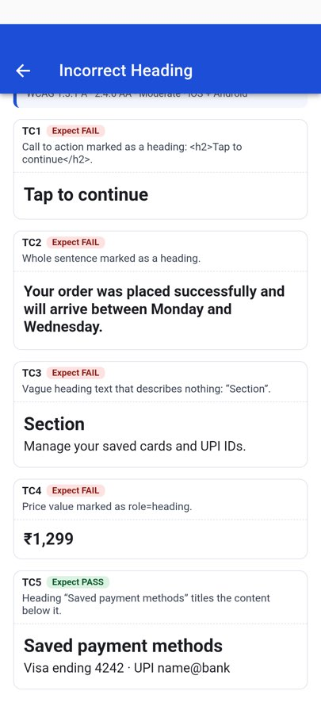
input-type-for-input-field · 6 test cases · 2 scan(s) · web nodes captured 136 (83 with a name, 120 importantForAccessibility=false)
Rows for this rule (status · node class · where):
none
What the rule needs: inputType vs label (Chromium sets inputType).
Why web content is / isn't evaluated: BSAdditionalRules.kt:2604 skips every node with isImportantForAccessibility=false: Chromium never sets it on WebView virtual nodes (BSRules.kt:604-607; BSViewAdapter.kt:100 → BSShouldFocusView.kt:27-38).
| TC | Expect | Scenario | Android result | |
|---|---|---|---|---|
| TC1 | FAIL | Label “Email” but type=text and no autocomplete. | not detected | |
| TC2 | FAIL | Label “Phone number” but type=text. | not detected | |
| TC3 | FAIL | Label “Password” but type=text (not secure). | not detected | |
| TC4 | FAIL | Ionic | ion-input “Email address” with type=text. | not detected |
| TC5 | PASS | type=email + autocomplete=email. | — | |
| TC6 | PASS | type=tel + autocomplete=tel; type=password + current-password. | — |
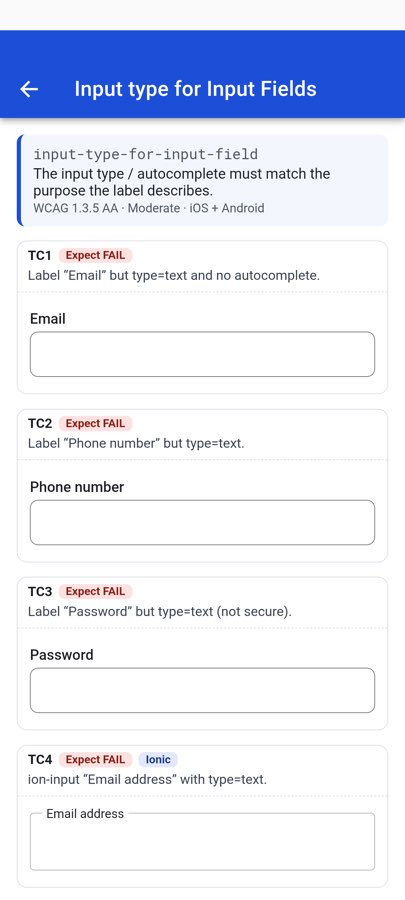
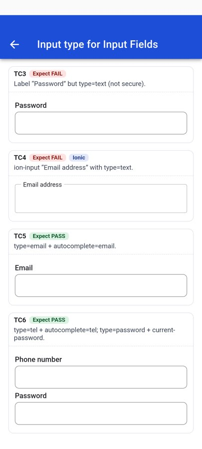
interactable-element-content-label · 6 test cases · 2 scan(s) · web nodes captured 128 (85 with a name, 119 importantForAccessibility=false)
Rows for this rule (status · node class · where):
none
What the rule needs: Speakable label of interactive nodes.
Why web content is / isn't evaluated: BSAIRules.kt:60-64 skips every node with isImportantForAccessibility=false: Chromium never sets it on WebView virtual nodes (BSRules.kt:604-607; BSViewAdapter.kt:100 → BSShouldFocusView.kt:27-38).
| TC | Expect | Scenario | Android result | |
|---|---|---|---|---|
| TC1 | FAIL | Icon-only button (SVG) with no accessible name. | not detected | |
| TC2 | FAIL | Ionic | Icon-only ion-button (heart) without aria-label. | not detected |
| TC3 | FAIL | Link wrapping only an image with empty alt. | not detected | |
| TC4 | FAIL | Empty div role=button (no text, no label). | not detected | |
| TC5 | PASS | Icon button with aria-label “Share”. | — | |
| TC6 | PASS | Ionic | Icon ion-button with aria-label “Add to favourites”. | — |
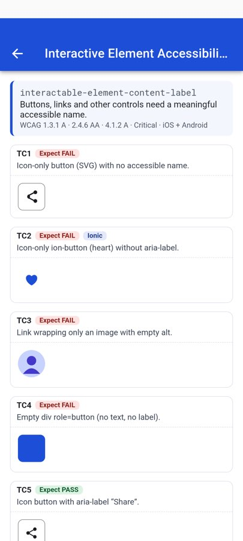
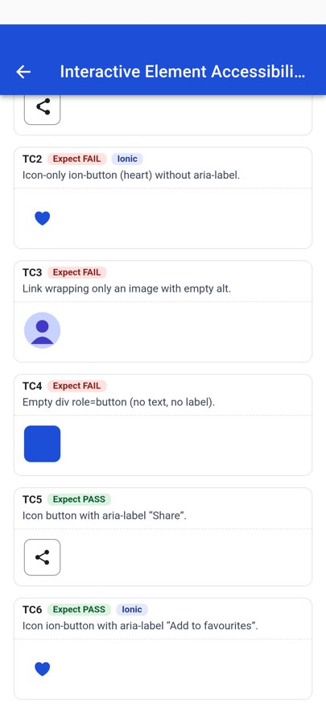
interactive-element-unsupported-type · 5 test cases · 1 scan(s) · web nodes captured 54 (42 with a name, 54 importantForAccessibility=false)
Rows for this rule (status · node class · where):
none
What the rule needs: Class prefix of interactive nodes.
Why web content is / isn't evaluated: BSAdditionalRules.kt:1074 skips every node with isImportantForAccessibility=false: Chromium never sets it on WebView virtual nodes (BSRules.kt:604-607; BSViewAdapter.kt:100 → BSShouldFocusView.kt:27-38).
| TC | Expect | Scenario | Android result | |
|---|---|---|---|---|
| TC1 | FAIL | Clickable div with no role. | not detected | |
| TC2 | FAIL | Invalid ARIA role “clickable”. | not detected | |
| TC3 | FAIL | Clickable element with role=text / generic. | not detected | |
| TC4 | PASS | div role=button tabindex=0. | — | |
| TC5 | PASS | Native <a href> link. | — |
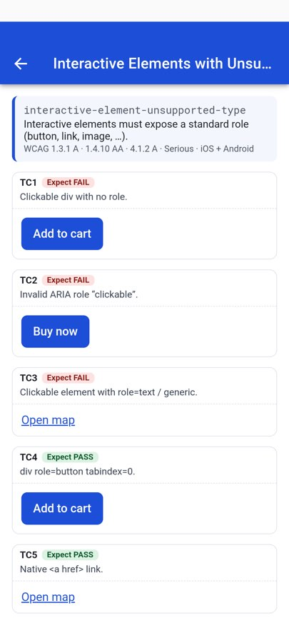
keyboard-focus-for-interactive-elements · 7 test cases · 2 scan(s) · web nodes captured 146 (105 with a name, 129 importantForAccessibility=false)
Rows for this rule (status · node class · where):
none
What the rule needs: Focusable flag of interactive nodes.
Why web content is / isn't evaluated: BSAdditionalRules.kt:1265 skips every node with isImportantForAccessibility=false: Chromium never sets it on WebView virtual nodes (BSRules.kt:604-607; BSViewAdapter.kt:100 → BSShouldFocusView.kt:27-38).
| TC | Expect | Scenario | Android result | |
|---|---|---|---|---|
| TC1 | FAIL | div with a click handler and no tabindex. | not detected | |
| TC2 | FAIL | Real button removed from tab order (tabindex=-1). | not detected | |
| TC3 | FAIL | Anchor without href (not focusable). | not detected | |
| TC4 | FAIL | role=button with tabindex=0 but no Enter/Space handling. | not detected | |
| TC5 | EDGE | Scrollable region that is not focusable. | — | |
| TC6 | PASS | role=button, tabindex=0, handles Enter and Space. | — | |
| TC7 | PASS | Native button. | — |
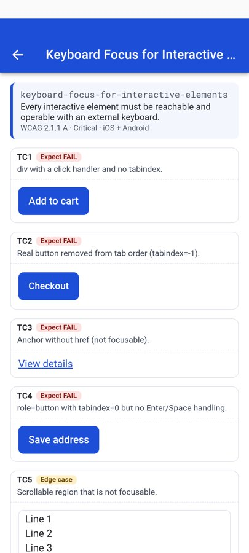
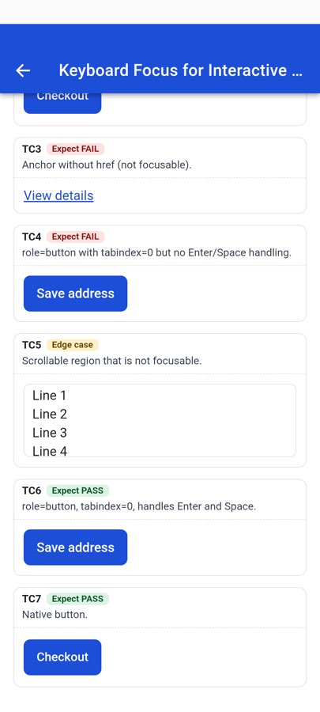
label-in-name · 5 test cases · 2 scan(s) · web nodes captured 110 (84 with a name, 110 importantForAccessibility=false)
Rows for this rule (status · node class · where):
none
What the rule needs: Label vs visible text.
Why web content is / isn't evaluated: BSAdditionalRules.kt:2360 skips every node with isImportantForAccessibility=false: Chromium never sets it on WebView virtual nodes (BSRules.kt:604-607; BSViewAdapter.kt:100 → BSShouldFocusView.kt:27-38). The data IS captured (e.g. Button accessibleName "Submit message" for visible "Send") but never evaluated.
| TC | Expect | Scenario | Android result | |
|---|---|---|---|---|
| TC1 | FAIL | Visible “Send”; name “Submit message” (doesn't contain “Send”). | not detected | |
| TC2 | FAIL | Visible “Next”; name “Continue”. | not detected | |
| TC3 | FAIL | Ionic | ion-button “Search” with aria-label “Find”. | not detected |
| TC4 | EDGE | Visible “Q&A”; name “Questions and answers” (abbreviation). | — | |
| TC5 | PASS | Visible “Send”; name “Send message”. | — |
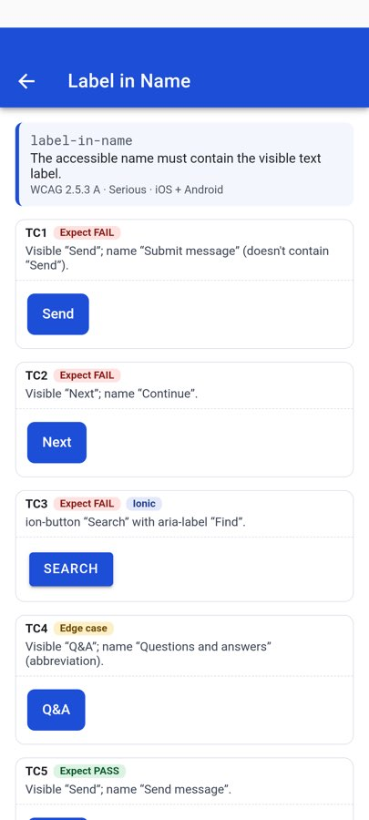
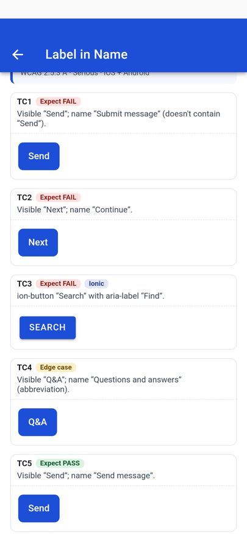
link-text-purpose · 6 test cases · 2 scan(s) · web nodes captured 136 (110 with a name, 134 importantForAccessibility=false)
Rows for this rule (status · node class · where):
none
What the rule needs: clickableSpans / TextView link text.
Why web content is / isn't evaluated: BSAIRules.kt:632 skips every node with isImportantForAccessibility=false: Chromium never sets it on WebView virtual nodes (BSRules.kt:604-607; BSViewAdapter.kt:100 → BSShouldFocusView.kt:27-38); the URLSpan data is captured (AppAccessibility.java:5835-5860).
| TC | Expect | Scenario | Android result | |
|---|---|---|---|---|
| TC1 | FAIL | Stop-word link: “Click here”. | not detected | |
| TC2 | FAIL | Generic “Read more” with no context. | not detected | |
| TC3 | FAIL | Raw URL as link text. | not detected | |
| TC4 | FAIL | Link with no text (image with no alt). | not detected | |
| TC5 | EDGE | “Read more” whose aria-label adds context: “Read more about pricing”. | — | |
| TC6 | PASS | Descriptive text: “Read the refund policy”. | — |
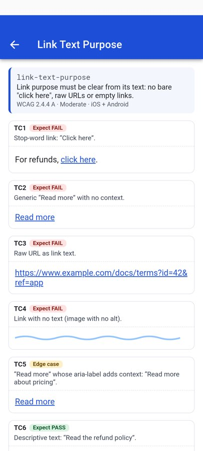
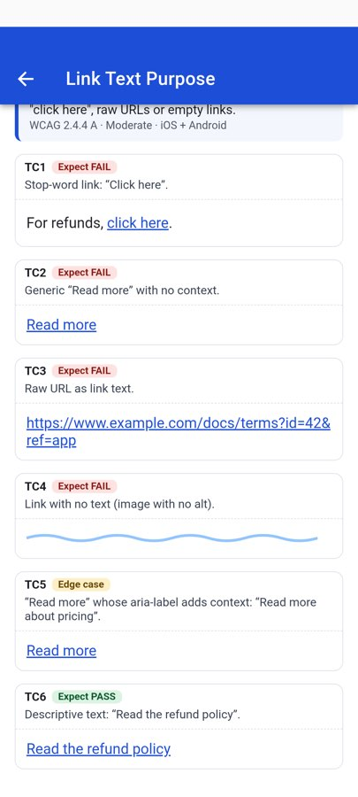
imageview-element-content-label · 6 test cases · 2 scan(s) · web nodes captured 118 (83 with a name, 100 importantForAccessibility=false)
Rows for this rule (status · node class · where):
none
What the rule needs: Image-role accessible nodes.
Why web content is / isn't evaluated: BSAIRules.kt:263 skips every node with isImportantForAccessibility=false: Chromium never sets it on WebView virtual nodes (BSRules.kt:604-607; BSViewAdapter.kt:100 → BSShouldFocusView.kt:27-38); <img> is also ROLE_NONE.
| TC | Expect | Scenario | Android result | |
|---|---|---|---|---|
| TC1 | FAIL | Informative photo with no alt attribute. | not detected | |
| TC2 | FAIL | Meaningless alt: “IMG_2024.png”. | not detected | |
| TC3 | FAIL | Generic alt: “image”. | not detected | |
| TC4 | FAIL | Inline SVG role=img with no title or label. | not detected | |
| TC5 | PASS | Accurate alt: “Golden retriever catching a ball”. | — | |
| TC6 | PASS | Decorative divider with alt=“” (should be ignored). | — |
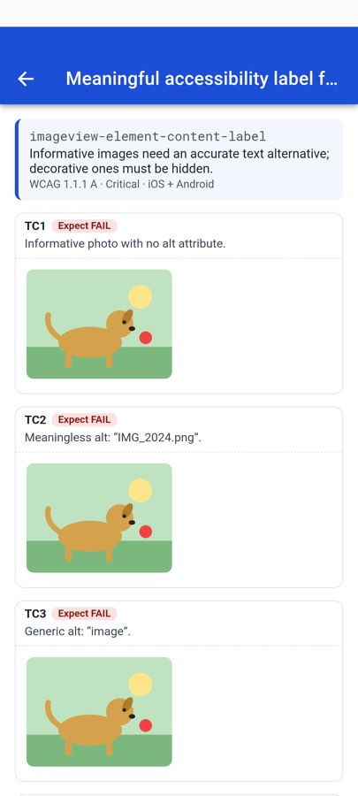
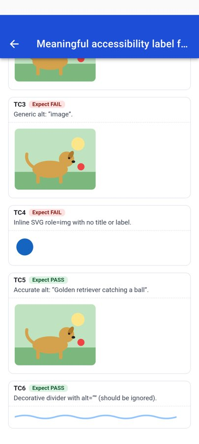
meaningful-reading-order · 5 test cases · 2 scan(s) · web nodes captured 118 (96 with a name, 110 importantForAccessibility=false)
Rows for this rule (status · node class · where):
2× ai_review on FrameLayout · outside TCs
What the rule needs: TalkBack focus caption sequence.
Why web content is / isn't evaluated: Web nodes never appear in the focus caption (BSAIRules.kt ~535); one screen-level ai_review candidate only.
| TC | Expect | Scenario | Android result | |
|---|---|---|---|---|
| TC1 | FAIL | Visually 1-2-3, but DOM order is 3-1-2 (CSS order). | not detected | |
| TC2 | FAIL | row-reverse: the value is read before its label. | not detected | |
| TC3 | FAIL | Two columns interleaved: reads Name, City, Email, Zip. | not detected | |
| TC4 | FAIL | Absolutely positioned “Buy” button first in DOM, drawn last. | not detected | |
| TC5 | PASS | DOM order matches visual order. | — |
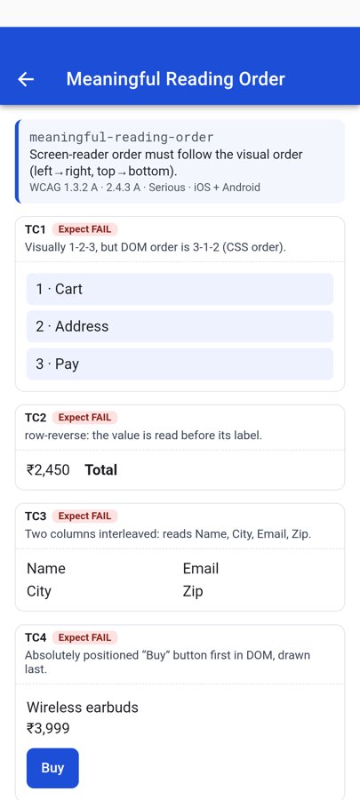
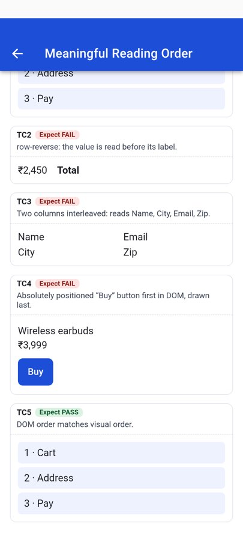
meaningful-visual-order · 4 test cases · 2 scan(s) · web nodes captured 104 (84 with a name, 101 importantForAccessibility=false)
Rows for this rule (status · node class · where):
1× ai_review on FrameLayout · TC2
1× ai_review on FrameLayout · outside TCs
What the rule needs: Accessible visible nodes.
Why web content is / isn't evaluated: BSAIRules.kt:596 skips every node with isImportantForAccessibility=false: Chromium never sets it on WebView virtual nodes (BSRules.kt:604-607; BSViewAdapter.kt:100 → BSShouldFocusView.kt:27-38); one screen-level ai_review candidate only.
| TC | Expect | Scenario | Android result | |
|---|---|---|---|---|
| TC1 | FAIL | Submit is drawn above the fields it submits. | not detected | |
| TC2 | FAIL | Price sits above an unrelated product; the label is far from its value. | AI candidate | |
| TC3 | FAIL | Step 3 appears before step 1 visually. | not detected | |
| TC4 | PASS | Logical flow: title, fields, then action. | — |
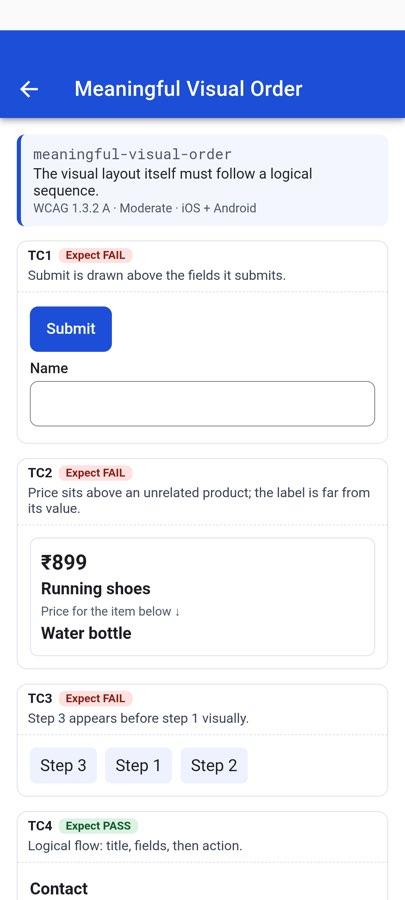
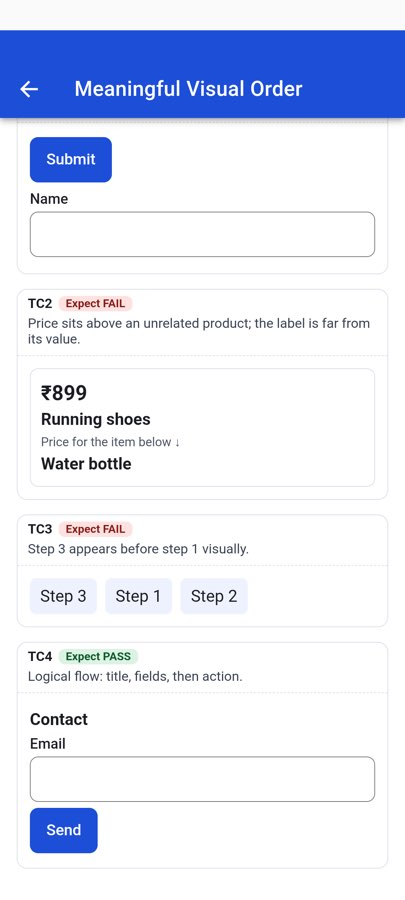
missing-heading · 5 test cases · 2 scan(s) · web nodes captured 118 (97 with a name, 111 importantForAccessibility=false)
Rows for this rule (status · node class · where):
35× ai_review on TextView · outside TCs
4× ai_review on TextView · TC1
4× ai_review on TextView · TC2
4× ai_review on TextView · TC3
4× ai_review on TextView · TC4
2× ai_review on TextView · TC5
What the rule needs: TextView leaf text.
Why web content is / isn't evaluated: No importance gate (BSAIRules.kt:450-460): web text leaves become AI candidates (ai_review) with is_accessible:"0"; verdict needs TCG.
| TC | Expect | Scenario | Android result | |
|---|---|---|---|---|
| TC1 | FAIL | Large bold “Payment details” div that is not a heading. | AI candidate | |
| TC2 | FAIL | Ionic | ion-list-header “Recent orders” (renders a div, not a heading). | AI candidate |
| TC3 | FAIL | Bold section title inside a card, styled with a <b> tag. | AI candidate | |
| TC4 | PASS | Real <h2> “Payment details”. | AI candidate | |
| TC5 | PASS | div role=heading aria-level=2 “Shipping”. | AI candidate |
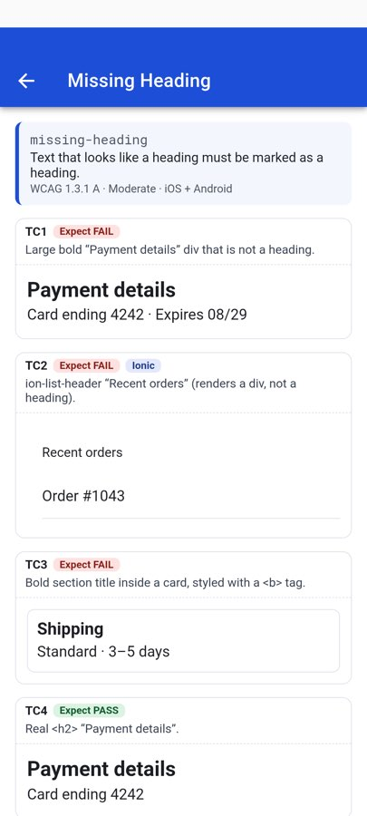
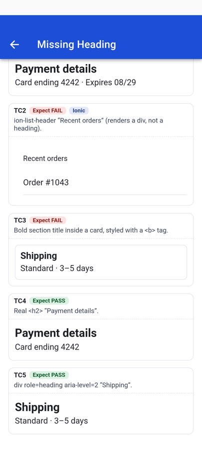
missing-view-type-in-spoken-output · 5 test cases · 1 scan(s) · web nodes captured 56 (45 with a name, 56 importantForAccessibility=false)
Rows for this rule (status · node class · where):
none
What the rule needs: Spoken caption of interactive nodes.
Why web content is / isn't evaluated: BSAdditionalRules.kt:1599 skips every node with isImportantForAccessibility=false: Chromium never sets it on WebView virtual nodes (BSRules.kt:604-607; BSViewAdapter.kt:100 → BSShouldFocusView.kt:27-38).
| TC | Expect | Scenario | Android result | |
|---|---|---|---|---|
| TC1 | FAIL | Div acting as a switch: no role, no state. | not detected | |
| TC2 | FAIL | Span styled as a link, with a click handler and no role. | not detected | |
| TC3 | FAIL | Tab bar made of plain divs (no tablist/tab roles). | not detected | |
| TC4 | PASS | role=switch with aria-checked and a name. | — | |
| TC5 | PASS | Proper tablist / tab roles with aria-selected. | — |
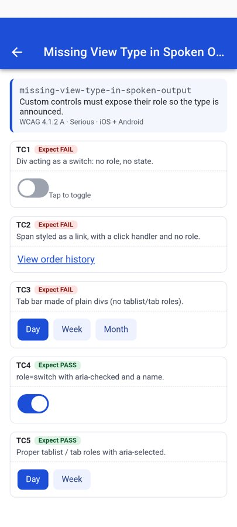
non-text-color-contrast · 5 test cases · 2 scan(s) · web nodes captured 108 (85 with a name, 107 importantForAccessibility=false)
Rows for this rule (status · node class · where):
none
What the rule needs: Swatch on ImageView / ImageButton / SeekBar / ProgressBar.
Why web content is / isn't evaluated: Swatches are captured only for those native classes (AppAccessibility.java:5928-5934); web borders / icons have none.
| TC | Expect | Scenario | Android result | |
|---|---|---|---|---|
| TC1 | FAIL | Input border #e0e0e0 on #fff (1.3:1). | not detected | |
| TC2 | FAIL | Icon-only button with a #cfcfcf icon on #fff (1.6:1). | not detected | |
| TC3 | FAIL | Checkbox whose border is #d6d6d6 (unchecked state barely visible). | not detected | |
| TC4 | FAIL | Selected vs unselected segment differ only by a #f2f2f2 fill. | not detected | |
| TC5 | PASS | Input border #767676 (4.5:1) and icon #5f6368. | — |
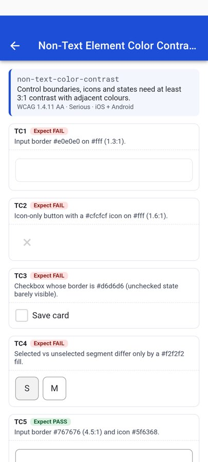
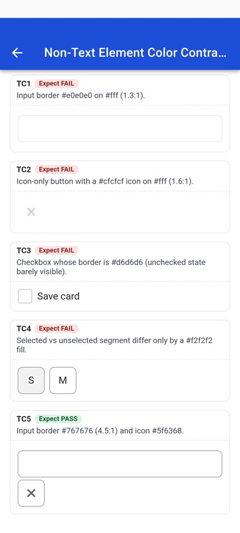
overlapping-interactive-elements · 5 test cases · 2 scan(s) · web nodes captured 116 (92 with a name, 114 importantForAccessibility=false)
Rows for this rule (status · node class · where):
none
What the rule needs: Bounds of speakable interactive nodes.
Why web content is / isn't evaluated: BSAdditionalRules.kt:1001 speakableTextApplicable skips every node with isImportantForAccessibility=false: Chromium never sets it on WebView virtual nodes (BSRules.kt:604-607; BSViewAdapter.kt:100 → BSShouldFocusView.kt:27-38).
| TC | Expect | Scenario | Android result | |
|---|---|---|---|---|
| TC1 | FAIL | Close “×” button overlaps a “Details” link. | not detected | |
| TC2 | FAIL | Two buttons overlap via negative margin. | not detected | |
| TC3 | FAIL | Ionic | ion-fab-button floating over a row's “Buy” button. | not detected |
| TC4 | EDGE | Nested interactive: a button inside a clickable card. | — | |
| TC5 | PASS | Buttons spaced apart. | — |
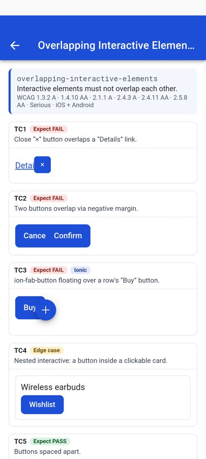
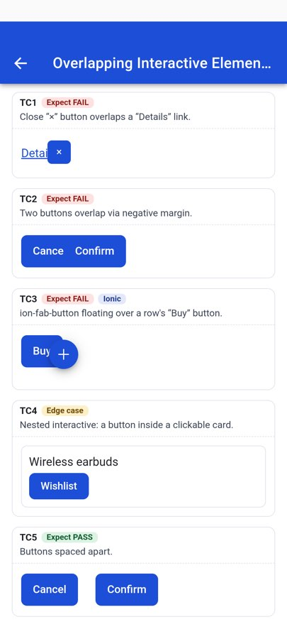
readable-text-size · 5 test cases · 1 scan(s) · web nodes captured 48 (41 with a name, 48 importantForAccessibility=false)
Rows for this rule (status · node class · where):
none
What the rule needs: fontSize (sp) from ExtraRenderingInfo.
Why web content is / isn't evaluated: Chromium does not populate EXTRA_DATA_RENDERING_INFO, so fontSize is null for web text (AppAccessibility.java:4503-4526); plus the importance gate (BSAdditionalRules.kt:680).
| TC | Expect | Scenario | Android result | |
|---|---|---|---|---|
| TC1 | FAIL | 9px caption. | not detected | |
| TC2 | FAIL | 11px body text. | not detected | |
| TC3 | EDGE | 13.5px, just under the 14 threshold. | — | |
| TC4 | PASS | 14px (the threshold). | — | |
| TC5 | PASS | 16px body text. | — |
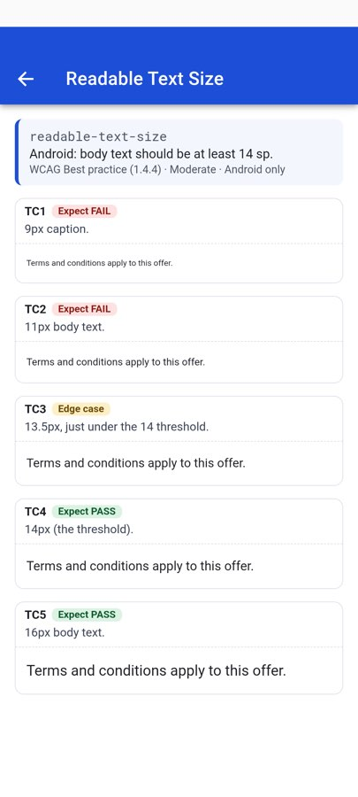
readable-text-spacing · 4 test cases · 2 scan(s) · web nodes captured 88 (74 with a name, 88 importantForAccessibility=false)
Rows for this rule (status · node class · where):
none
What the rule needs: fontSize + OCR line geometry.
Why web content is / isn't evaluated: fontSize ?: return (BSAdditionalRules.kt:2762): null for web text.
| TC | Expect | Scenario | Android result | |
|---|---|---|---|---|
| TC1 | FAIL | Line height 1.0 on multi-line text. | not detected | |
| TC2 | FAIL | Paragraphs with no spacing between them. | not detected | |
| TC3 | FAIL | Negative letter spacing and zero word spacing. | not detected | |
| TC4 | PASS | Line height 1.5, paragraph spacing 2×, word spacing 0.16em. | — |
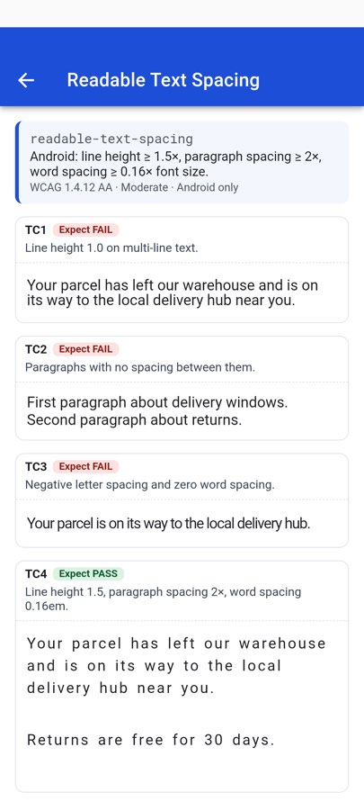
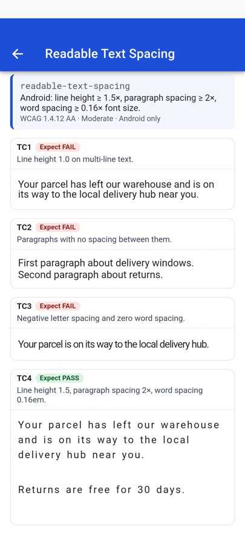
responsive-containers · 4 test cases · 1 scan(s) · web nodes captured 43 (36 with a name, 43 importantForAccessibility=false)
Rows for this rule (status · node class · where):
2× pass on FrameLayout · TC2
1× pass on FrameLayout · outside TCs
1× pass on LinearLayout · TC2
1× pass on LinearLayout · outside TCs
1× pass on ViewGroup · TC2
What the rule needs: layoutSize from ExtraRenderingInfo.
Why web content is / isn't evaluated: layoutSize null for web nodes → skipped (BSAdditionalRules.kt:1731); rows seen are on native containers.
| TC | Expect | Scenario | Android result | |
|---|---|---|---|---|
| TC1 | FAIL | Fixed width 600px card that overflows the screen (content cut off). | not detected | |
| TC2 | FAIL | Fixed 72px-high box whose content overflows and is hidden. | PASS (missed) | |
| TC3 | PASS | Fluid container (max-width:100%) that wraps. | — | |
| TC4 | EDGE | Content inside ion-content (the page itself scrolls). | — |
focus-order-for-interactive-elements · 5 test cases · 2 scan(s) · web nodes captured 102 (82 with a name, 102 importantForAccessibility=false)
Rows for this rule (status · node class · where):
none
What the rule needs: TalkBack focus caption vs touch reachability.
Why web content is / isn't evaluated: WebView content out of scope by design (APPA11Y-5614, BSAdditionalRules.kt:1297-1316): TalkBack navigates web via ACTION_NEXT_HTML_ELEMENT; only the WebView host is checked.
| TC | Expect | Scenario | Android result | |
|---|---|---|---|---|
| TC1 | FAIL | Tappable button hidden from the screen reader (aria-hidden). | not detected | |
| TC2 | FAIL | Clickable card inside an aria-hidden container. | not detected | |
| TC3 | FAIL | Clickable image with role=presentation. | not detected | |
| TC4 | EDGE | Visually hidden skip link (reachable by swipe, not by touch). | — | |
| TC5 | PASS | Standard button reachable both ways. | — |
special-character-element-content-label · 6 test cases · 2 scan(s) · web nodes captured 120 (88 with a name, 113 importantForAccessibility=false)
Rows for this rule (status · node class · where):
none
What the rule needs: Label text.
Why web content is / isn't evaluated: BSAdditionalRules.kt:547 skips every node with isImportantForAccessibility=false: Chromium never sets it on WebView virtual nodes (BSRules.kt:604-607; BSViewAdapter.kt:100 → BSShouldFocusView.kt:27-38).
| TC | Expect | Scenario | Android result | |
|---|---|---|---|---|
| TC1 | FAIL | Glyph in label: “★ Favourite”. | not detected | |
| TC2 | FAIL | Emoji in label: “🔥 Hot deals”. | not detected | |
| TC3 | FAIL | Arrow glyph via aria-label: “Next →”. | not detected | |
| TC4 | FAIL | Check mark only: “✓”. | not detected | |
| TC5 | EDGE | Currency symbols: “Pay ₹499”. | — | |
| TC6 | PASS | Plain text; the glyph is aria-hidden. | — |
screen-reader-for-interactive-elements · 4 test cases · 1 scan(s) · web nodes captured 46 (34 with a name, 46 importantForAccessibility=false)
Rows for this rule (status · node class · where):
1× pass on Button · TC1
1× pass on Button · TC2
1× pass on Button · TC3
1× pass on Button · TC4
1× pass on Button · outside TCs
1× pass on View · outside TCs
1× pass on WebView · TC2
What the rule needs: isInScreenReaderTree + caption.
Why web content is / isn't evaluated: Uses isInScreenReaderTree (virtual web nodes → true, BSAdditionalRules.kt:1386): emits metadata PASS rows only; no failing condition exercised by web content.
| TC | Expect | Scenario | Android result | |
|---|---|---|---|---|
| TC1 | FAIL | Spoken name is a developer ID: “btn_submit_01”. | PASS (missed) | |
| TC2 | FAIL | Icon button named after its file: “ic_settings_24dp”. | PASS (missed) | |
| TC3 | FAIL | Whitespace-only aria-label. | PASS (missed) | |
| TC4 | PASS | Meaningful spoken name: “Settings”. | PASS |
screen-orientation · 2 test cases · 1 scan(s) · web nodes captured 32 (25 with a name, 32 importantForAccessibility=false)
Rows for this rule (status · node class · where):
1× pass on FrameLayout · outside TCs
What the rule needs: Activity orientations (root only).
Why web content is / isn't evaluated: Not web-dependent.
| TC | Expect | Scenario | Android result | |
|---|---|---|---|---|
| TC1 | FAIL | This screen locks itself to portrait while it is open. | not detected | |
| TC2 | PASS | After Release, rotating the device re-lays out this screen. | — |
switch-element-content-label · 6 test cases · 2 scan(s) · web nodes captured 130 (92 with a name, 130 importantForAccessibility=false)
Rows for this rule (status · node class · where):
none
What the rule needs: Switch-role nodes (Chromium maps role=switch → android.widget.Switch).
Why web content is / isn't evaluated: BSAdditionalRules.kt:297 skips every node with isImportantForAccessibility=false: Chromium never sets it on WebView virtual nodes (BSRules.kt:604-607; BSViewAdapter.kt:100 → BSShouldFocusView.kt:27-38).
| TC | Expect | Scenario | Android result | |
|---|---|---|---|---|
| TC1 | FAIL | Native checkbox role=switch with no label. | not detected | |
| TC2 | FAIL | Ionic | ion-toggle with no label. | not detected |
| TC3 | FAIL | div role=switch with aria-checked but no name. | not detected | |
| TC4 | EDGE | Vague label “Toggle” that doesn't say what it does. | — | |
| TC5 | PASS | Ionic | ion-toggle labelled “Wi-Fi”. | — |
| TC6 | PASS | role=switch named “Bluetooth”. | — |
text-color-contrast · 7 test cases · 2 scan(s) · web nodes captured 124 (93 with a name, 110 importantForAccessibility=false)
Rows for this rule (status · node class · where):
35× pass on TextView · outside TCs
2× needs_review on TextView · TC4
1× needs_review on Button · TC2
1× needs_review on TextView · TC1
1× pass on Button · TC2
1× pass on TextView · TC2
1× pass on TextView · TC5
1× pass on TextView · TC7
What the rule needs: contrastSwatch + OCR text parts.
Why web content is / isn't evaluated: No importance gate (PAAA-541), but the WebView root is forced PASS ("WebView marked as pass", BSRules.kt:666-700) and non-accessible nodes cap at NEEDS_REVIEW; web text cannot FAIL.
| TC | Expect | Scenario | Android result | |
|---|---|---|---|---|
| TC1 | FAIL | #999 on #fff, 14px (2.8:1). | needs review | |
| TC2 | FAIL | White on amber #ffc107 button (1.6:1). | needs review | |
| TC3 | FAIL | Light placeholder #c0c0c0 in a field (1.8:1). | not detected | |
| TC4 | FAIL | White text over a light photo area. | needs review | |
| TC5 | EDGE | Large text 24px #949494 on #fff (3.0:1) meets the large-text threshold. | PASS | |
| TC6 | EDGE | Disabled button with low contrast (exempt: inactive component). | — | |
| TC7 | PASS | #595959 on #fff (7:1). | PASS |
text-truncation · 6 test cases · 2 scan(s) · web nodes captured 128 (104 with a name, 122 importantForAccessibility=false)
Rows for this rule (status · node class · where):
39× pass on TextView · outside TCs
3× pass on TextView · TC1
2× pass on TextView · TC2
2× pass on TextView · TC3
2× pass on TextView · TC4
2× pass on TextView · TC5
1× pass on TextView · TC6
What the rule needs: TextView role + fontSizeUnit + layoutSize.
Why web content is / isn't evaluated: validContentText returns true when fontSizeUnit≠2 (BSRules.kt:152): web TextViews always PASS, can never FAIL.
| TC | Expect | Scenario | Android result | |
|---|---|---|---|---|
| TC1 | FAIL | Single line with ellipsis (text-overflow). | PASS (missed) | |
| TC2 | FAIL | Two-line clamp (-webkit-line-clamp) on a description. | PASS (missed) | |
| TC3 | FAIL | Fixed height + overflow:hidden cuts the last line. | PASS (missed) | |
| TC4 | FAIL | Ionic | ion-label with the ion-text-nowrap utility: single line, ellipsized. | PASS (missed) |
| TC5 | PASS | Ionic | Default ion-label (Ionic 9 wraps by default). | PASS |
| TC6 | PASS | Plain wrapping paragraph. | PASS |
touch-target-size · 7 test cases · 2 scan(s) · web nodes captured 144 (109 with a name, 135 importantForAccessibility=false)
Rows for this rule (status · node class · where):
2× fail on Button · TC1
2× fail on Button · TC2
2× fail on Button · TC3
2× pass on Button · outside TCs
2× pass on View · outside TCs
1× pass on Button · TC6
1× pass on Button · TC7
What the rule needs: Rect of clickable nodes vs 48 dp.
Why web content is / isn't evaluated: No importance gate: web clickables ARE evaluated (inline-link exemption BSRuleHelpers.kt:161-166; ad-WebView exemption :340-359).
| TC | Expect | Scenario | Android result | |
|---|---|---|---|---|
| TC1 | FAIL | 24×24 icon button. | FAIL ✓ | |
| TC2 | FAIL | 32×32 “Remove” button. | FAIL ✓ | |
| TC3 | FAIL | 100×30 text button (height below 44). | FAIL ✓ | |
| TC4 | FAIL | Ionic | ion-button size=small (about 28px high). | not detected |
| TC5 | EDGE | Inline link inside a sentence (inline exception). | — | |
| TC6 | PASS | 44×44 icon button. | PASS | |
| TC7 | PASS | Small 20px icon with padding giving a 48×48 hit area. | PASS |
touch-target-size-and-spacing · 5 test cases · 1 scan(s) · web nodes captured 63 (56 with a name, 63 importantForAccessibility=false)
Rows for this rule (status · node class · where):
4× fail on Button · TC1
3× pass on Button · TC3
3× pass on View · TC5
2× fail on Button · TC2
2× pass on Button · TC4
1× pass on Button · outside TCs
1× pass on View · outside TCs
What the rule needs: Rects + OCR presence.
Why web content is / isn't evaluated: Evaluates web clickables; "phantom web element" guard NA's nodes without OCR confirmation (BSAdditionalRules.kt:755-791).
| TC | Expect | Scenario | Android result | |
|---|---|---|---|---|
| TC1 | FAIL | Four 16×16 buttons 2px apart. | FAIL ✓ | |
| TC2 | FAIL | Two 20×20 buttons touching (0px gap). | FAIL ✓ | |
| TC3 | PASS | 16×16 buttons with 24px spacing (the 24 pt circles don't intersect). | PASS | |
| TC4 | PASS | 24×24 adjacent buttons (minimum size met). | PASS | |
| TC5 | EDGE | Adjacent inline links in text (inline exception). | PASS |
traversal-order-cycle · 4 test cases · 2 scan(s) · web nodes captured 106 (82 with a name, 98 importantForAccessibility=false)
Rows for this rule (status · node class · where):
1× pass on FrameLayout · TC1
1× pass on FrameLayout · outside TCs
1× pass on ViewGroup · TC1
1× pass on ViewGroup · outside TCs
What the rule needs: Traversal cycle flags.
Why web content is / isn't evaluated: BSAdditionalRules.kt:966 skips every node with isImportantForAccessibility=false: Chromium never sets it on WebView virtual nodes (BSRules.kt:604-607; BSViewAdapter.kt:100 → BSShouldFocusView.kt:27-38).
| TC | Expect | Scenario | Android result | |
|---|---|---|---|---|
| TC1 | FAIL | Leaving field 3 jumps focus back to field 1: “Continue” is unreachable. | PASS (missed) | |
| TC2 | FAIL | Positive tabindex ping-pong: A(1)→B(2)→A via focus handler. | not detected | |
| TC3 | EDGE | Modal focus trap with an accessible Close button (intended trap). | — | |
| TC4 | PASS | Linear order with no loops. | — |
two-dimensional-scroll · 4 test cases · 2 scan(s) · web nodes captured 144 (130 with a name, 144 importantForAccessibility=false)
Rows for this rule (status · node class · where):
41× pass on TextView · outside TCs
38× pass on View · TC3
16× pass on View · outside TCs
14× pass on TextView · TC1
8× pass on View · TC1
8× pass on View · TC2
7× pass on TextView · TC2
3× pass on FrameLayout · TC1
3× pass on FrameLayout · outside TCs
2× fail on View · TC1
2× pass on Button · outside TCs
2× pass on GridView · TC3
2× pass on LinearLayout · TC1
2× pass on LinearLayout · outside TCs
2× pass on TextView · TC4
2× pass on View · TC4
2× pass on WebView · TC1
2× pass on WebView · outside TCs
1× pass on ViewGroup · TC1
1× pass on ViewGroup · outside TCs
What the rule needs: actionList scroll directions.
Why web content is / isn't evaluated: No importance gate (BSAdditionalRules.kt:924-927): Chromium adds all four directional scroll actions, so web scrollers are evaluated.
| TC | Expect | Scenario | Android result | |
|---|---|---|---|---|
| TC1 | FAIL | Fixed-height region that scrolls both horizontally and vertically. | FAIL ✓ | |
| TC2 | FAIL | Wide article text (900px) inside a vertically scrolling page. | PASS (missed) | |
| TC3 | EDGE | Data table: 2-D layout is essential (exempt under WCAG 1.4.10). | PASS | |
| TC4 | PASS | Horizontal-only carousel (one scroll direction). | PASS |
Raw data (laptop scratch): andscans/poc/<rule>/p<N>/{snapshot.json,screenshot.png,visible.json} · per-rule outcomes: summary.json.